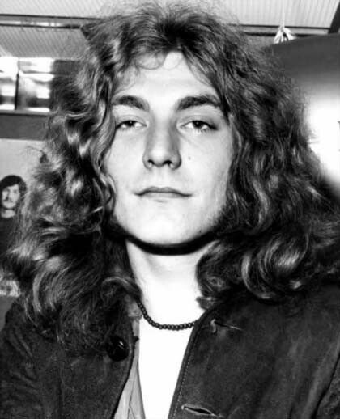

Robert Plant

Robert Anthony Plant es un músico, compositor y productor británico, conocido mayormente por haber sido cantante de la banda de rock Led Zeppelin desde su fundación en 1968 hasta su separación en 1980. Influenciado por varios artistas estadounidenses de blues y rock and roll, a principios de los años 1960 comenzó su carrera como vocalista en algunas bandas inglesas, en las que además tocaba ocasionalmente la guitarra y la armónica. En 1968 fue uno de los miembros fundadores de Led Zeppelin, en la que grabó ocho álbumes de estudio hasta 1980 y un disco póstumo publicado en 1982. Gracias a su presencia escénica y vestimenta creó una de las imágenes más icónicas de la historia del rock y debido a su particular estilo vocal es considerado por la Enciclopedia Británica como el creador del sonido que definió la voz del hard rock y heavy metal.